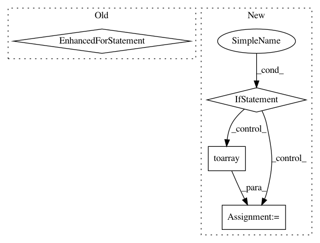

a31eab99dfbc6dcb7fe2ef149c59a30910adbbbd,src/gensim/similarities/docsim.py,SparseMatrixSimilarity,getSimilarities,#SparseMatrixSimilarity#Any#,206
Before Change
vec = scipy.sparse.csr_matrix(doc).T // Tx1 array
else:
vec = scipy.sparse.dok_matrix((self.corpus.shape[1], 1), dtype=self.corpus.dtype)
for fieldId, fieldValue in doc:
vec[fieldId, 0] = fieldValue
if vec.shape != (self.corpus.shape[1], 1):
raise ValueError("vector shape mismatch; expected %s, got %s" %
((self.corpus.shape[1], 1,), vec.shape))
After Change
// compute cosine similarity against every other document in the collection
result = self.corpus * query.tocsc() // N x T * T x C = N x C
if result.shape[1] == 1:
// for queries of one document, return a 1d array
result = result.toarray().flatten()
else:
// otherwise, return a 2d matrix (//queries x //index)
result = result.toarray().T
return result
//endclass SparseMatrixSimilarity
In pattern: SUPERPATTERN
Frequency: 3
Non-data size: 4
Instances
Project Name: RaRe-Technologies/gensim
Commit Name: a31eab99dfbc6dcb7fe2ef149c59a30910adbbbd
Time: 2011-05-15
Author: radimrehurek@seznam.cz
File Name: src/gensim/similarities/docsim.py
Class Name: SparseMatrixSimilarity
Method Name: getSimilarities
Project Name: rusty1s/pytorch_geometric
Commit Name: 60956c4194b3db0f5d762b434adf92fef1241186
Time: 2019-08-07
Author: shunwang.gong16@imperial.ac.uk
File Name: torch_geometric/utils/geodesic.py
Class Name:
Method Name: geodesic_distance
Project Name: scipy/scipy
Commit Name: 2344e4105a44fa929aa6fb82597c2ac81bef5171
Time: 2014-02-21
Author: pav@iki.fi
File Name: scipy/sparse/linalg/dsolve/linsolve.py
Class Name:
Method Name: spsolve